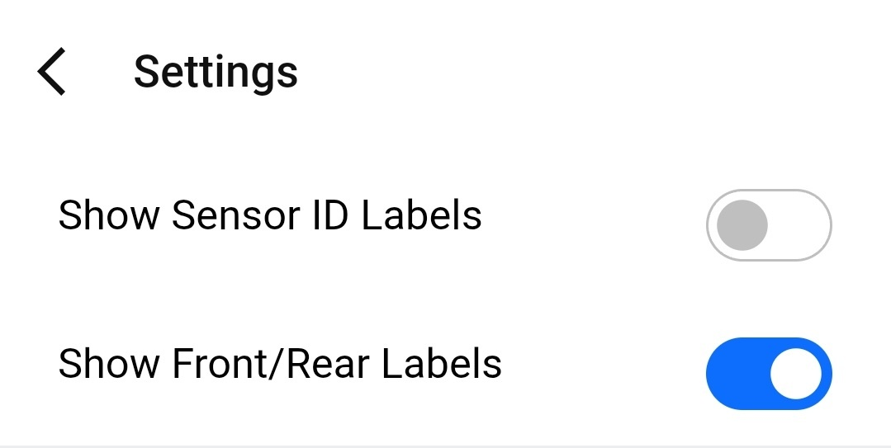
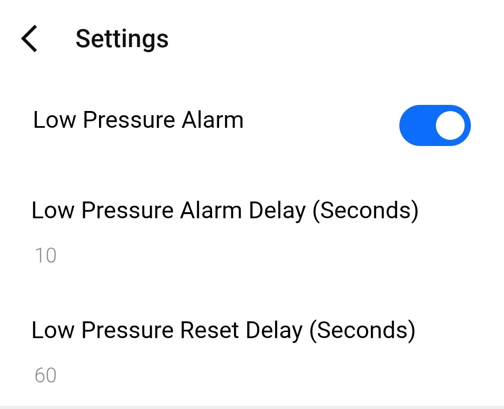

Platform support
Edge and watch support
TubeWitch supports Garmin Edge devices and Garmin watches, including vibration alerts where supported.
Feature overview
TubeWitch supports Edge devices and watches, multiple sensor sets, configurable display modes, detailed alarm controls, timeout handling, and activity review through Garmin Connect IQ stats, with alert timing controls designed to reduce nuisance duplicate alarms.
TubeWitch is the most flexible option for showing compatible tire pressure sensor data on Garmin, with broad control over labels, colors, layout behavior, alarm types, timing, and compatibility settings.


Platform support
TubeWitch supports Garmin Edge devices and Garmin watches, including vibration alerts where supported.
Sensor management
Store up to five named bikes or wheelsets, with front, rear, or both sensors enabled per set.
Touch controls
On touchscreen devices, Touch Data Field combines set switching, TubeWitch disable, manual rescan after timeout, and stopping alarm repeats.
Ride review
Average pressures and the active sensor set name are saved to Garmin Connect IQ stats after the ride.
TubeWitch gives more display and alert control than any other tire pressure sensor data field option: colors, labels, layout orientation, background style, alarm outputs, trigger timing, reset timing, decimal precision, and compatibility behavior can all be tuned to suit the users preferences.
Enter the numeric sensor ID, such as 21760, in its Front or Rear slot in TubeWitch. Do not enter a Bluetooth address or BLE device name. TubeWitch receives SKS AIRSPY ANT+ pressure broadcasts using the configured numeric IDs; no Garmin sensor pairing is required.
Manual mode keeps one configured set active. Auto Switch cycles through each configured set for 10 seconds until an active set is found.
Default 60 seconds. If both sensors disconnect while Active Sensor Set is Auto, TubeWitch waits for this delay before scanning other sets again at 10 seconds each.
Optional on touchscreen devices. The setting combines Touch to Switch Sensor Sets, Touch to Disable TubeWitch, Touch to Rescan after timeout, and Touch to Stop Alarm Repeats.
Display Style offers TubeWitch Mode and Compatibility Mode. TubeWitch Mode is the default, but it may be unavailable on some devices that are not yet fully supported. Compatibility Mode uses dynamic font sizing and positioning and works across all devices.
Choose Auto, Vertical, or Horizontal layout orientation.
Choose Auto, Dark, or Light background styling for clearer contrast.
Customize the separator used in horizontal label layouts.
Choose Auto, 0, 1, or 2 decimal places depending on layout size and readability.
TubeWitch supports PSI, BAR, and kPa. BAR and kPa layouts support decimal precision.
Set low and high pressure targets for each wheel in each Sensor Set in TubeWitch settings, not in the manufacturer's app. A target of 0 disables that individual pressure limit. Choose units before entering targets; changing units does not convert saved target numbers.
High and Low Pressure Alarm groups keep alert behavior separated for more granular control.
High and Low Pressure Alarm groups organize alert settings independently for more detailed tuning.
Popup alerts, audible alerts, and vibration alerts are available where device support exists.
Alarm Trigger Delay, Alarm Reset Delay, additional repeats 90 seconds apart, tone selection, and alarm box and font color control how alerts behave and appear.
Setup checks confirm that numeric sensor IDs and pressure targets are saved, and identify missing-sensor conditions.
Default 15 minutes. During an activity, timeout minutes can be configured. If sensors are not found, TubeWitch stops scanning to save battery and shows a clear "Sensor(s) Not Found" message.
No timeout is applied before an activity starts.
"?" indicates stale data when no recent pressure broadcast has been received. The SKS AIRSPY freshness interval is 30 seconds. "X" indicates the timeout was reached and TubeWitch stopped searching for that sensor to save battery.
After timeout, scanning can be restarted with Touch Data Field on supported devices or by using Stop and Resume on the activity.
Ever stop for a quick lunch but want to check your tire pressures before you get going again? Instead of just showing "--" on your Garmin Edge or watch screen while your sensors are inactive or out of range, TubeWitch keeps the last known pressures and shows a "?" while it waits for fresh pressure broadcasts.




After a Garmin Edge power cycle, or after starting a new activity on a watch, Auto Switch will scan each configured sensor set for 10 seconds until it finds one that is active. Even when all 5 bikes or wheelsets are configured, it will typically find the correct set within a minute.
When starting a ride, TubeWitch can lock onto any of the 5 configured sensor sets if they are active and nearby. Once locked on, it will stay on that set until they are out of range and TubeWitch shows "?", indicating no recent pressure broadcast. It then waits for the Auto Switch Scan Delay, default 60 seconds, and resumes scanning all configured sensor sets for 10 seconds each. After riding away from the other nearby sensors, Auto Switch should lock on to the bike or wheelset actually being ridden within a minute.
If a Garmin activity is started but sensors are not being used, the data field keeps searching until the timeout, default 15 minutes. Then it shows "Sensors Not Found" and stops scanning to save battery. Tapping the Data Field or Stop and Resume can restart the scan.
If a Garmin activity is started and sensors were found but the signals drop, the field shows the last received pressure with a "?" to indicate stale data. If the signal stays missing long enough, the sensor times out after the default 15 minutes. It then shows an "X" next to the pressure, meaning it has stopped searching for that sensor to save battery.
If Auto Switch mode is active and both sensors become stale, TubeWitch starts scanning other configured sensor sets before showing an "X". It will still time out after 15 minutes if no sensors are found.